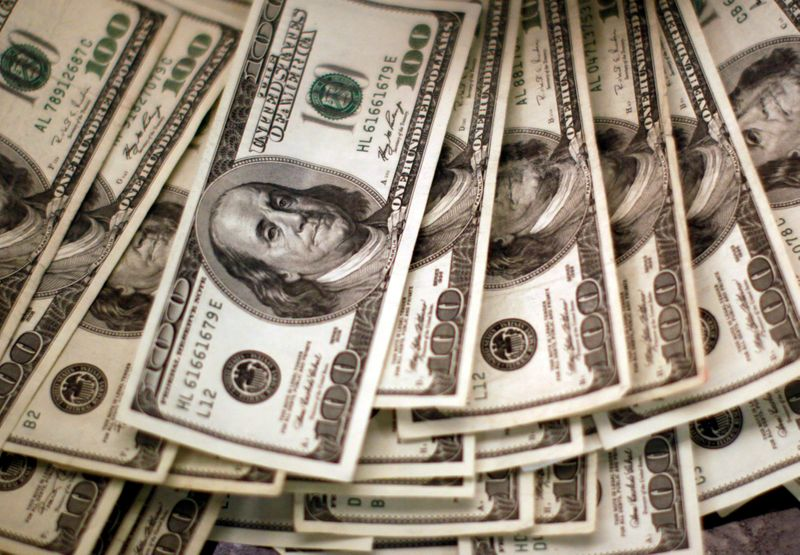

Analysis: Dueling pre-election bets playing out in U.S. Treasury market
By Gertrude Chavez-Dreyfuss and Saqib Iqbal Ahmed
NEW YORK (Reuters) – The $20 trillion U.S. Treasury market is showing signs of life after months of sleepy trading, as opposing bets on how the economy will perform clash amid fresh worries over COVID-19 and jitters over Tuesday’s presidential election.
Goldman Sachs, BlackRock and UBS are among those that believe the recent rally in Treasury yields, which move inversely to prices, may run a bit further, driven by expectations that lawmakers will eventually deliver a second round of fiscal stimulus to help the economy out of its coronavirus-induced slump.Net bets on lower prices for 30-year Treasuries by leveraged investors stood at record levels in futures markets as of last week.
Still, BlackRock thinks any further rise in yields would be limited, with the Federal Reserve likely to step in to support markets.In recent days, other investors are also betting that a COVID-19 resurgence and the possibility of a closer-than-expected presidential race may pull yields lower, especially if the election produces a split government, where continued political wrangling could reduce or delay a stimulus package.
The moves illustrate how diverging views on future U.S. economic performance have reintroduced a measure of volatility into the market for U.S. government bonds.
Expectations of record-low interest rates for years to come had largely suppressed market gyrations following a sharp coronavirus-fueled drop in yields in March.Some of that volatility has crept back into the market in recent weeks, with the ICE BofA MOVE Index .MOVE>, which tracks traders’ expectations of swings in the Treasury market, near its highest level since June.
Graphic: Bond gyrations https://fingfx.thomsonreuters.com/gfx/mkt/xlbpgwmxepq/Pasted%20image%201603821224747.png
Hugo Rogers, chief investment officer at private bank Deltec International Group, has recently added to positions in longer-dated Treasuries, in part on expectations that a failure by Democrats to win a 'blue sweep' in next week’s elections will cause prices to rally.
The rally in yields 'is another false dawn,' he said.'It’s a bet on a clean Democratic sweep, and honestly, some of these Senate races are looking very close.'
Exchange traded funds have reflected shifting bets on Treasuries, as yields on the benchmark 10-year Treasury edged lower in the beginning of the week but rallied to close at 0.83% on Thursday.
The iShares 20+ Year Treasury Bond exchange traded fund
, one way investors play moves in the Treasury market, saw some of the largest inflows among ETFs earlier this week but was hit with outflows on Thursday, according to Christopher Murphy, co-head of derivatives strategy at Susquehanna Financial Group.
In options markets, skew, which gauges demand for put options in relation to call options, has been shifting risk of a sharp move toward TLT rising and yields falling, Murphy said.Skew was near two-year highs at the beginning of the month, driven by expectations of rising yields.
Options investors also put on straddle trades earlier this week that would benefit from 10-year yields remaining between 0.65% and 0.85%, said Patrick Leary, chief market strategist and senior trader at broker-dealer Incapital.
While a 'decent amount of the fast money community is thinking of the ‘blue wave’ scenario and large fiscal stimulus, that’s been only one part of the trade,' said Haider Ali, head of U.S. Treasury trading at RBC Capital Markets.
Real money accounts, a term often used to describe asset managers such as insurance companies and pension funds, 'are not buying into the narrative that this reflation trade is going to take hold and they are positioning accordingly,' he said.
Graphic: Treasurys – CFTC net positions https://fingfx.thomsonreuters.com/gfx/mkt/yzdpxagwdvx/Pasted%20image%201603918076608.png
How the rally plays out could ultimately depend on whether the Fed – which concludes its monetary policy meeting on Nov.5, a day after the Treasury Department releases its quarterly refunding statement – will allow yields to continue rising in coming months.
'The market knows that there is a level that would cause (the Fed) to act,' Leary said.Ten-year yields 'would be comfortably above 1.0% if the prospects of Fed purchases were not waiting in the wings.'
(Additional reporting by Karen Brettell, Kate Duguid and Ira Iosebashvili; writing by Ira Iosebashvili; Editing by Megan Davies and Jonathan Oatis)
Posted On: 2020-10-30T00:00:00

Content Date: 2020-10-30
Download Date: 2021-04-17
Document ID: L0C04AAFO